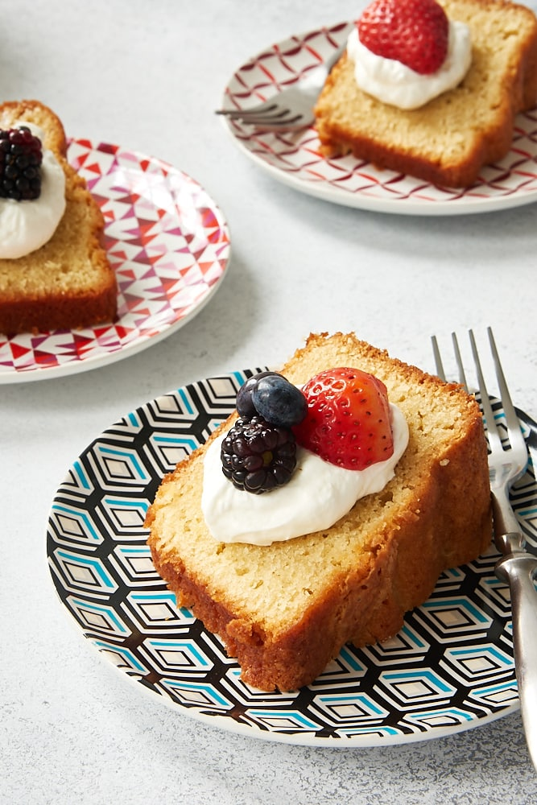
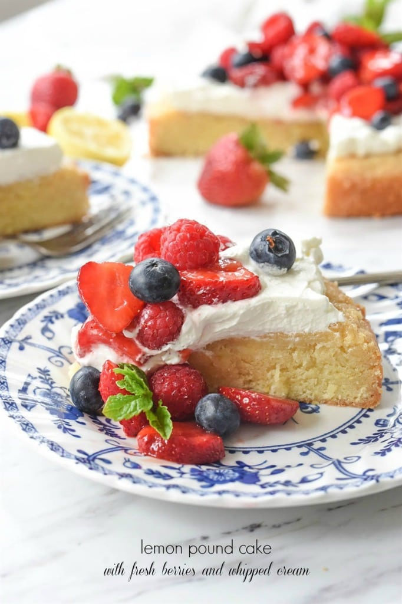

On this page I will supply the recipe ingredients in order to make the BEST pound cake you’ve ever had! I’ll also include some secret tips to make your pound cake eating experience even better!
For the recipe steps follow this link!Ingredients 2 cups salted butter room temperature; 2 cups granulated sugar; 4 eggs; 1 stick of room temperature cream cheese; 3 ½ cups of all purpose flour; 1 tbsp vanilla extract; EXTRA TIPS You can add whipped cream and berries to make your cake taste even better!
 